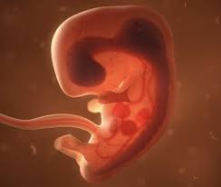

ORGANO GENITALE FEMMINILE
Completamente interna:
E’ formata da:
- Vulva: sono due grandi labbra;
- Piccole labbra e clitoride: protegge l’uretra
(dove escono le urine).
➢ VAGINA
La vagina fa da collegamento fra utero e genitali esterni,
qui viene riversato lo sperma durante un rapporto sessuale, permette
il passaggio del sangue mestruale, ed la parte che si dilata durante il parto. Abbiamo poi
le ovaie, Si trovano nella parte bassa dell’addome e vengono protette dalle ossa del bacino.
Esse sono costituite da
follicoli ovarici
Se avviene la fecondazione,
all’interno dell’utero hanno luogo l’impianto dell'embrione e il suo sviluppo.
L’ovulazione è quando un follicolo si rompe e espelle una cellula uovo pronta
per essere fecondata.

➢ LA FECONDAZIONE
Al momento dell’eiaculazione nella vagina vengono immessi dal 300 ai 500 milioni di spermatozoi, ma soltanto poche centinaia raggiungeranno l’oocita secondario che si trova in una delle due tube di Falloppio.
Gli spermatozoi che raggiungono la cellula uovo vi si concentrano intorno e si attaccano alla sua superficie liberando gli enzimi contenuti nel loro acrosoma.
Non appena lo spermatozoo ha oltrepassato anche quest’ultima barriera, la testa contenente il nucleo della cellula può entrare, a questo punto la membrana plastica della cellula uovo si modifica formando la membrana di fecondazione, che impedisce l’ingresso a qualsiasi altro spermatozoo.
➢ DALL’ EMBRIONE AL FETO
La fecondazione avviene in genere nella parte dell’ovidotto, mentre l’impianto dell’embrione nell’utero si verifica solo 6-8 giorni dopo. Lo zigote va incontro a molte divisioni mitotiche; la cellula iniziale diventa prima un piccolo ammasso compatto di cellule chiamato morula e successivamente si trasforma in una sferetta cava detta blastocisti.
Durante la seconda settimana dall’impianto si forma il sacco amniotico, una membrana trasparente e ripiena di liquido che proteggerà l’embrione durante tutto il suo sviluppo. La terza settimana l’embrione perde il suo aspetto informe: si è già formata la testa, si sta sviluppando il cervello e inizia a battere il cuore, pompando il sangue per tutto il corpo.
Nelle ultime settimane di gravidanza la madre passa al feto, attraverso la placenta, anche anticorpi che difenderanno dalle malattie il neonato per settimane o mesi dopo la nascita.

➢ IL PARTO
Il parto avviene a circa 38 settimane dopo la fecondazione, si divide in due fasi: travaglio e espulsione.
- Durante la fase del travaglio la cervice si dilata grazie a contrazioni sempre più ravvicinate e intense.
- Quando la dilatazione raggiunge i 10cm inizia la fase dell’ espulsione, in cui la testa del bambino si insinua nel canale vaginale e il piccolo, aiutato dalle contrazioni attive dei muscoli addominali della madre, viene alla luce.
Appena nato, il bambino inizia a respirare automaticamente, rendendosi indipendente dalla circolazione materna. A questo punto il cordone ombelicale viene tagliato; il segmento di cordone che resta attacato al neonato si secca e si distacca spontaneamente nel giro di pochi giorni, lasciando la sua traccia tipica, l’ombelico. Il distacco e l’espulsione della placenta e delle membrane fetali avvengono entro un’ora dal parto e possono essere accompagnate da altre contrazioni uterine.
➢ SVILUPPO DEL FETO
Dopo l'organogenesei tutti gli apparati e i sistemi sono formati w continuano a svilupparsi e accrescersi.
A partire sel secondo trimestre di gravidanza del feto aumentano e i suoi movimenti si fanno sempre più attivi e percettibili.
Nell'ultimo trimestre il sistema digirente diventa funzionale, il fegato inizia a immagazzinare glicogeno, i reni producono urina e il sonno si atterna con la veglia.
Le ultime strutture vhe arrivano a completa maturazione sono i polmoni.
Nel corso dell'ultimo trimestre si forma del frasso sotto la pelle per tenere il feto caldo quandon nascera e per dare a lui energie.
➢CURIOSITA'
- PENE
Esistono due tipi, lo shower e il grower.
Lo shower è il pene che risulta della stessa misura sia a riposo che in erezione. Il grower invece, è quello che con l'erezione diventa più grande ed è anche il più diffuso.
L'uomo ha una media di 11 erezioni al giorno, di cui 9 solo alla notte. In particolare nella fase Rem, dove a controllare ci pensa il cervello.
- VAGINA
Diversamente dall’apparato maschile è completamente interno:
E’ formata dalla vulva ,che sono due grandi labbra , piccole labbra e clitoride , che protegge l’uretra (dove escono le urine) e la vagina. La vagina fa da collegamento fra utero e genitali esterni , qui viene riversato lo sperma durante un rapporto sessuale, permette il passaggio del sangue mestruale, ed la parte che si dilata durante il parto. Abbiamo poi le ovaie, Si trovano nella parte bassa dell’addome e vengono protette dalle ossa del bacino. Esse sono costituite da follicoli ovarici, che sono un gruppo di cellule che proteggono e nutrono la cellula uovo durante il suo sviluppo.Da ognuna delle due parte un Tuba di Falloppio che collegano le ovaie con l’utero, ed in esse avviene la fecondazione. Se avviene la fecondazione, all’interno dell’utero hanno luogo l’impianto dell'embrione e il suo sviluppo. La parte inferiore dell’utero, detta anche collo, collega questo organo alla vagina.
A partire dalla pubertà a per un periodo di 30/40 anni, per 28 giorni circa, si verificheranno delle modifiche nel corpo della donna che la prepareranno ad un eventuale fecondazione. Esso si chiama ciclo ovarico, mentre modificazioni uterine, che avvengono nello stesso momento , è detto ciclo mestruale.Entrambi sono sotto controllo degli ormoni. L’ovulazione è quando un follicolo si rompe e espelle una cellula uovo pronta per essere fecondata.
- FETO
Durata della sopravvivenza degli spermatozoi: Gli spermatozoi possono sopravvivere nel tratto riproduttivo femminile per un massimo di 5 giorni. Ciò significa che, se una donna ha un rapporto sessuale qualche giorno prima dell'ovulazione, gli spermatozoi possono aspettare l'arrivo dell'uovo e fecondarlo.
Dimensioni dell'ovulo: L'ovulo umano è una delle cellule più grandi del corpo umano.
Gemelli omozigoti e eterozigoti: La fecondazione può portare alla formazione di gemelli omozigoti o eterozigoti. I gemelli omozigoti, comunemente noti come gemelli identici, si formano quando un unico ovulo fecondato si divide in due embrioni separati. I gemelli eterozigoti, noti anche come gemelli fraterni, si formano quando due ovuli diversi vengono fecondati da due spermatozoi diversi.
Durata del lavoro di parto: La durata del lavoro di parto può variare notevolmente da donna a donna e da gravidanza a gravidanza. In generale, il primo parto può richiedere più tempo rispetto ai successivi. Il lavoro di parto può durare da alcune ore fino a più di 24 ore.